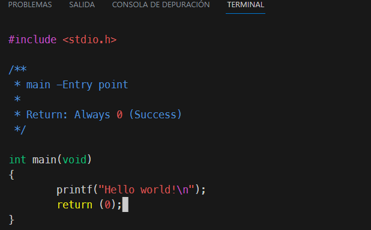

GCC is a collection of compilers created by the GNU project. A compiler is a program that converts the source code written in a programming language into machine code that can be executed by the computer. GCC supports several programming languages, such as C, C++, Objective-C, Fortran, Ada and Java. GCC is free software and is distributed under the GPL license. GCC is one of the most widely used compilers in software development, as it allows creating optimized and portable programs that work on different platforms .
When you compile a program in C using the GNU compiler (GCC), you are performing a process that transforms the source code into executable code by the processor. This process consists of several phases, which are as follows
Our program will show the famous "Hello world".

When using only gcc main.c , it will return an executable with the
following default name o.out this is in Linux if you do it in windows it
will be o.exe, we can change it using the following command gcc -o main
main.c, visit the
man to
know what else he can do.
It will be simple as using ./a.out

This resource was created by Jhony Escriba with the support of bing chat.